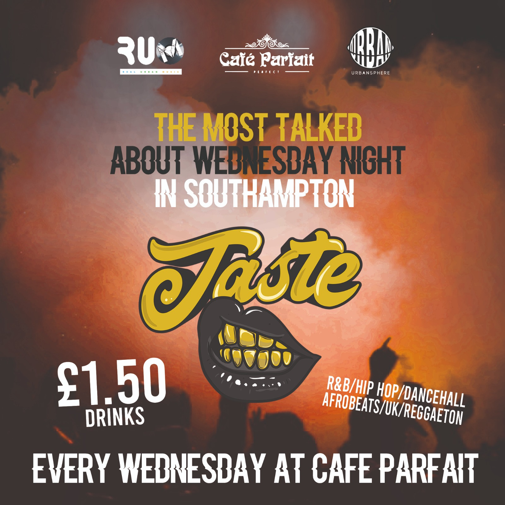
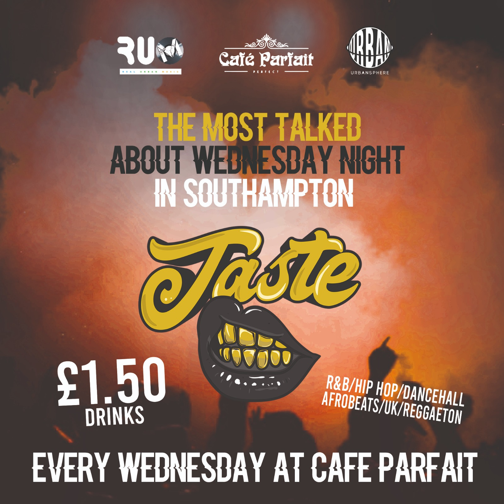

About DJ ESSBO
DJ ESSBO is one of the best RnB DJ’s in the south. He started is DJ career at houses parties and fans loved his mixes. He’s now performing in clubs such as Cafe Parfait, Buddha Lounge and Orange Rooms every week. He’s balancing his Uni degree with his DJ lifestyle and in an online interview he quoted ‘It’s crazy because i’ll be walking into Uni and everyone will be saying hello and recognising me!! It’s mad’. Since his houses-parties down the south he’s blown up on the DJ scene. Known for his Urban American Rap such as Lil-Uzi-Vert, Gunna and Young Thug mixes he’s hoping to adventure to other cities down the south in 2020 and has a few events lined up already. DJ ESSBO says ‘being a part of a company like Urban Volume has really helped my career to venture out to different clubs and express my skills to thousands of fans’. Take a look at the contact details if you want DJ ESSBO to perform at your Nightclub.

Events by DJ ESSBO

 
